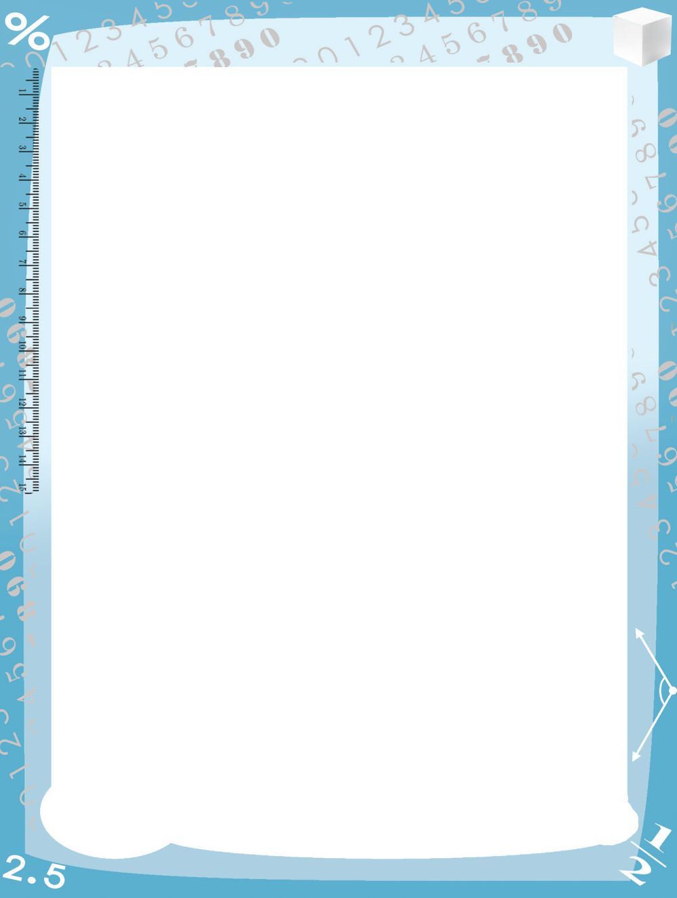
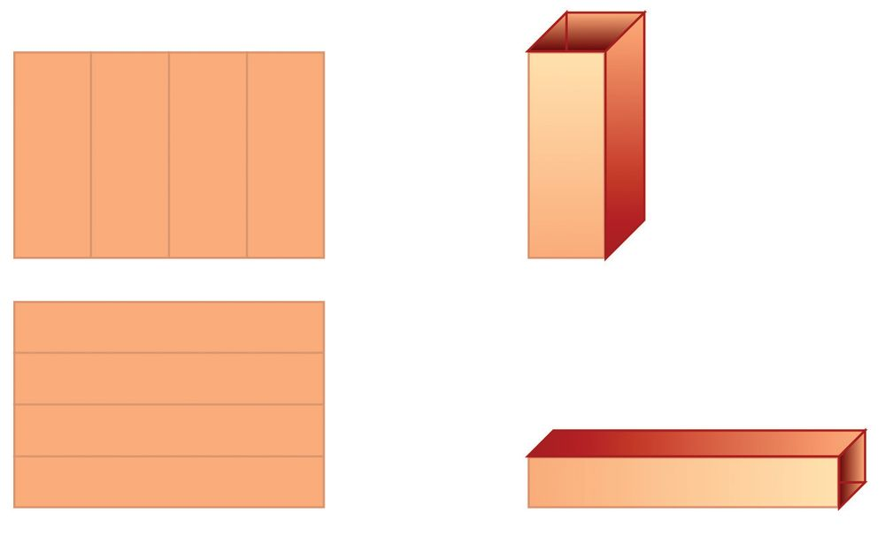
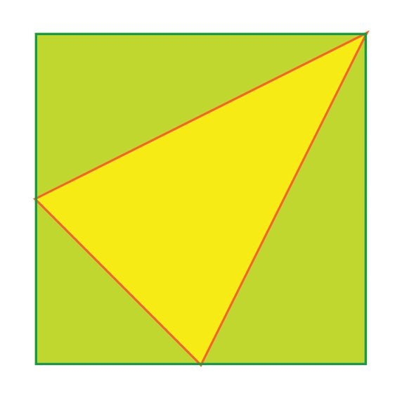
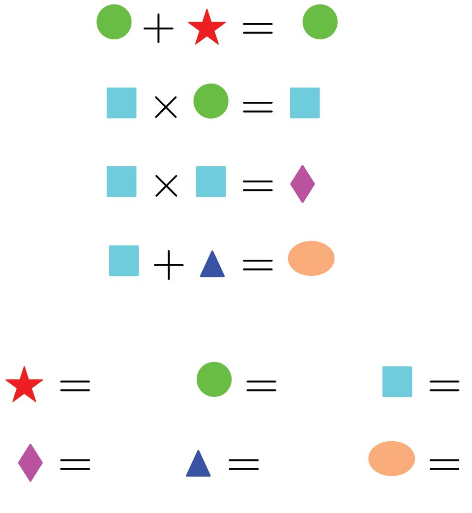

ഗണിതം
അൺപം ചിഗ്ലിത്ഥാം 1.
6 സെ‚ിമീ-‰യ്യ നീളവും 4 സെ‚ിമീ-‰യ്യ വീതിയുമു≈ ര≠ു ചതു-
രത്ഥട-ലാസുകƒ നെടുകെയും കുറുകെയും മടത്ഥി ര≠ു കുഴലുകƒ ഉ≠ാത്ഥുന്നു.
ഏതിനാണ് വ്യാപ്തം കൂടുതൺ? എത്ര കൂടുതൺ?
ഭാഗം ˛ 2
172


ഗണിതം
അൺപം ചിഗ്ലിത്ഥാം 1.
6 സെ‚ിമീ-‰യ്യ നീളവും 4 സെ‚ിമീ-‰യ്യ വീതിയുമു≈ ര≠ു ചതു-
രത്ഥട-ലാസുകƒ നെടുകെയും കുറുകെയും മടത്ഥി ര≠ു കുഴലുകƒ ഉ≠ാത്ഥുന്നു.
ഏതിനാണ് വ്യാപ്തം കൂടുതൺ? എത്ര കൂടുതൺ?
ഭാഗം ˛ 2
172


ക്ലാസ് - 6 2.
ചുവടെയുള്ള ചിത്രത്തിൽ സമച-തുര-ത്തിന്റെ ഒരു മൂലയും മറ്റു രണ്ട് വശങ്ങളുടെ മധ്യബിന്ദുക്കളും ചേർത്താണ് മഞ്ഞനിറ-മുള്ള ത്രികോണം വരച്ചിരിക്കുന്നത്.
സമച-തുര-ത്തിന്റെ പരപ്പള-വിന്റെ എത്ര ഭാഗമാണ് ത്രികോണ-ത്തിന്റെ പരപ്പള-വ്? 3.
ചുവടെ കൊടുത്തിരിക്കുന്ന ക്രിയകൾ നോക്കുക. 1 1 + =1 2 2
2+2 = 4
1 2 + =1 3 3
3+
1 3 + =1 4 4
4+ 3 =
1 4 + 5 =1 5
5+
2 3 + 5 =1 5
25 5 5 5 5 + = 6 = ണ്മ 3 2 3 2
3 9 = 2 2 4
= 2ണ്മ2 = 3ണ്മ
3 2
16 4 = 4ണ്മ 3 3
5 25 5 = = 5ണ്മ 4 4 4
തുകയും ഗുണന-ഫലവും തുല്യമായ മറ്റു ചില -സംഖ്യാജോടികൾ കണ്ടുപിടിക്കാമോ? ഇത്തരം ജോടികൾ കണ്ടുപിടിക്കാനുള്ള പൊതുവായ മാർഗം എന്താണ്? 173


ഗണിതം 4.
1 മുതൽ 10 വരെയുള്ള എണ്ണൽസംഖ്യക-ളുടെ ഗുണന-ഫല-ത്തെ,
അഭാജ്യസംഖ്യക-ളുടെ ഗുണന-ഫല-മായി ഇങ്ങനെ പിരിച്ചെഴുതാം. 1 ണ്മ 2 ണ്മ 3 ണ്മ 4 ണ്മ 5 ണ്മ 6 ണ്മ 7 ണ്മ 8 ണ്മ 9 ണ്മ 10
= (2 ണ്മ 2 ണ്മ 2 ണ്മ 2 ണ്മ 2 ണ്മ 2 ണ്മ 2 ണ്മ 2) ണ്മ (3 ണ്മ 3 ണ്മ 3 ണ്മ 3) ണ്മ (5 ണ്മ 5) ണ്മ 7
ഗുണനഫ-ലമായി കിട്ടുന്ന സംഖ്യക്ക് എത്ര ഘടക-ങ്ങളുണ്ടാകും? ഈ സംഖ്യയുടെ അവസാനം എത്ര പൂജ്യമുണ്ടാകും? ഇതുപോലെ 1 മുതൽ 20 വരെയുള്ള എണ്ണൽസംഖ്യക-ളുടെ ഗുണനഫ-ലത്തെ അഭാജ്യസംഖ്യക-ളുടെ ഗുണന-ഫല-മായി പിരിച്ചെഴുതിയാൽ ഏതെല്ലാം അഭാജ്യസംഖ്യക-ളുണ്ടാകും? ഓരോന്നും എത്ര എണ്ണം? ഗുണന-ഫല-മായി കിട്ടുന്ന സംഖ്യയ്ക്ക് എത്ര ഘടക-ങ്ങളുണ്ടാകും? ഈ സംഖ്യയുടെ അവസാനം എത്ര പൂജ്യമുണ്ടാകും? 5.
തീപ്പെട്ടിക്കോലുകൾകൊണ്ടുണ്ടാക്കിയ ത്രികോണ-ങ്ങൾ നോക്കൂ:
ആദ്യം ഒരു ത്രികോണം, പിന്നെ രണ്ട് വരിയിലായി ആകെ നാല് ത്രികോണം, അടുത്തത് മൂന്ന് വരിക-ളിലായി ഒൻപത് ത്രികോണങ്ങൾ. ഓരോ ചിത്രത്തിലും എത്ര കോലുകൾ ഉപയോഗിച്ചു? പട്ടിക-യായി എഴുതാം.
ഭാഗം - 2
174


ക്ലാസ് - 6 വരികൾ
ത്രികോണ-ങ്ങൾ
കോലുകൾ
1
1
3
2
4
9
3
9
18
4 5
പട്ടിക-യിൽ അടുത്ത രണ്ട് വരിക-ളിലെ സംഖ്യകൾ എഴുതാമോ? 10 വരികളിലാകുമ്പോൾ എത്ര ത്രികോണ-ങ്ങളുണ്ടാകും? ആകെ എത്ര കോലുകൾ വേണം? 6.
ചുവടെ കൊടു- ത്ത ഇ- ര ഇ- ക്ക ഉന്ന ക്രിയ- ക - ള ഇലെ ഓരോ രൂപവും 0, 1, 2, 3, 4, 5 എന്നീ സംഖ്യക-ളിൽ ഏതെങ്കിലുമൊന്നിനു പകര-മായാണ് വരച്ചിരിക്കുന്നത്. ഓരോന്നും ഏതു സംഖ്യയെയാണ് സൂചിപ്പിക്കുന്നതെന്ന് കണ്ടുപിടിക്കാമോ?
175